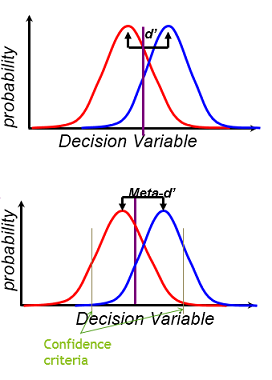
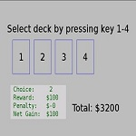
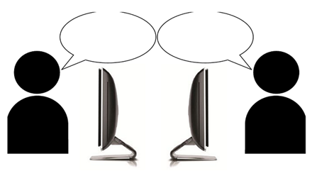
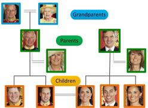
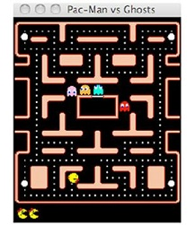
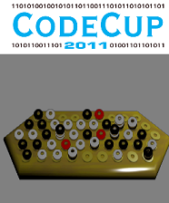

Selected Projects and Activities
M.S. Thesis: Metacognitive ability in substance abusers
 The aim of this project was to compare Metacognitive ability of opium users with healthy individuals in a visual and a memory task.
Signal Detection Theory (SDT) models were used to quantitatively measure Metacognition.
Supervisors: Dr. Bahador Bahrami & Dr. Majid Nili Ahmadabadi
Modeling decision making in the Iowa Gambling Task
 We used modeling techniques like
Reinforcement learning and Computational methods like clustering to obtain a deeper understanding of individual differences in the Iowa Gambling Task.
We fit models to IGT data performed with Computer interface or Real Cards to gain an insight into the effect of task representation in the IGT.
Adervisor: Dr. Majid Nili Ahmadabadi, Collaborators: Banafsheh Rafiee & Ali Shirvani
Game theoretic analysis of group decision making in a perceptual task
 As my game theory course project, I analysed the maximum confidence slating group decision making task. In this task participants make 2-alternative forced choice decisions followed by confidence rating. The group decision in each trial is the decision of the person with higher confidence rating. I modelled this task as a cooperative game based on the STD model, analysed the optimal learning strategy, and compared human behaviour (from a real experiment) with the optimal strategy.
Course Instructor: Dr. Hamed Kebriaei, Human data collected by: Ali Mahmoodi
B.S. Project: Recognizing kin relationship from face photo
In my B.S project I performed a survey on methods for recognizing kin relationship from face photo using image processing and machine learning techniques.
Adervisor: Dr. Zohreh Azimifar, Grade:20/20.
Intelligent ghost agent for the Pac-Man game
In this project we designed and implemented an intelligent ghost agent for the Ms Pac-Man vs. Ghosts game. We used graph algorithms and heuristics
to program our ghost. Our agent ranked 5th in the IEEE competition by Essex University.
Ghost controller name: Scintillants, Team mate: Mahsa Asadi
Intelligent agent for the Dvonn game
I participated in Codecup annual programming contest 2011, implementing an intelligent player for a board game named Dvonn.
I used Minimax algorithm with Alpha-Beta pruning and an effective heuristic evaluation function in my design. My agent was a finalist in the contest.
Advisors: Dr. Zohreh Azimifar & Fatemeh Torabi Asr
ACM Collegiate Programming Competition

During the 4th and 5th semesters of B.S., I focused on ACM programming competition. I was a member of Shiraz University ACM group where we studied algorithms,
practiced programming and participated in
weekly contests. Our team was selected to take part in the Asia Regional Contest in Tehran site, 2010, where we ranked 10th and were also honoured as the best all-women
team in the competition.
Team name: Scintillants->RSM, Team mates: Raziyeh Abdollahipour & Mahsa Asadi
Chemistry
During the 2nd and 3rd years of high school, I spent a lot of my time studying Chemistry. After two rounds of competitive exams, I was among the selected students taking part in the Chemistry Olympiad summer school in Young Scholars Club(YSC), Tehran, Summer 2007. I won a silver medal at the end of the summer school in the final round of the 25th National Student Chemistry Olympiad.